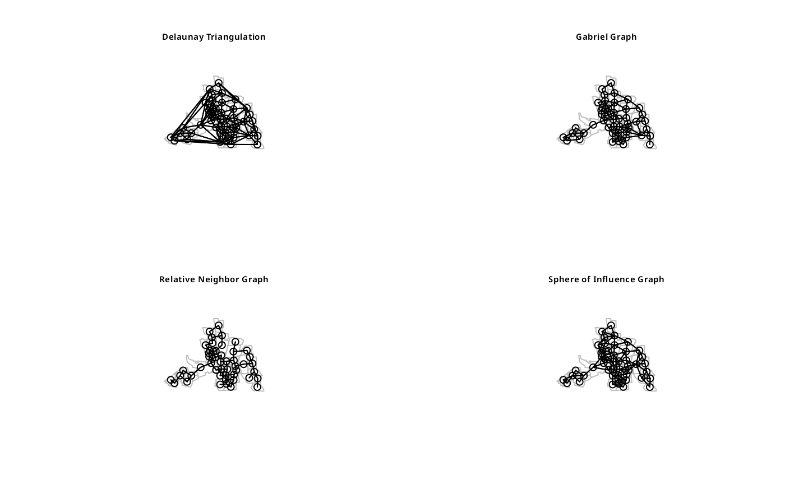

Graph based spatial weights
graphneigh.RdFunctions return a graph object containing a list with the vertex
coordinates and the to and from indices defining the edges. Some/all of these functions assume that the coordinates are not exactly regularly spaced. The helper
function graph2nb converts a graph
object into a neighbour list. The plot functions plot the graph objects.
gabrielneigh(coords, nnmult=3) relativeneigh(coords, nnmult=3) <!-- %beta.skel(coords,beta) --> soi.graph(tri.nb, coords, quadsegs=10) graph2nb(gob, row.names=NULL,sym=FALSE) # S3 method for Gabriel plot(x, show.points=FALSE, add=FALSE, linecol=par(col), ...) # S3 method for relative plot(x, show.points=FALSE, add=FALSE, linecol=par(col),...)
Arguments
| coords | matrix of region point coordinates or SpatialPoints object or |
|---|---|
| nnmult | scaling factor for memory allocation, default 3; if higher values are required, the function will exit with an error; example below thanks to Dan Putler |
| tri.nb | a neighbor list created from tri2nb |
| quadsegs | number of line segments making a quarter circle buffer, see the |
| gob | a graph object created from any of the graph funtions |
| row.names | character vector of region ids to be added to the
neighbours list as attribute |
| sym | a logical argument indicating whether or not neighbors should be symetric (if i->j then j->i) |
| x | object to be plotted |
| show.points | (logical) add points to plot |
| add | (logical) add to existing plot |
| linecol | edge plotting colour |
| ... | further graphical parameters as in |
Details
The graph functions produce graphs on a 2d point set that are all subgraphs of the Delaunay triangulation. The relative neighbor graph is defined by the relation, x and y are neighbors if
$$d(x,y) \le min(max(d(x,z),d(y,z))| z \in S)$$
where d() is the distance, S is the set of points and z is an arbitrary point in S. The Gabriel graph is a subgraph of the delaunay triangulation and has the relative neighbor graph as a sub-graph. The relative neighbor graph is defined by the relation x and y are Gabriel neighbors if
$$d(x,y) \le min((d(x,z)^2 + d(y,z)^2)^{1/2} |z \in S)$$
where x,y,z and S are as before. The sphere of influence graph is
defined for a finite point set S, let \(r_x\) be the distance from point x
to its nearest neighbor in S, and \(C_x\) is the circle centered on x. Then
x and y are SOI neigbors iff \(C_x\) and \(C_y\) intersect in at
least 2 places. From 2016-05-31, Computational Geometry in C code replaced by calls to functions in dbscan and sf; with a large quadsegs= argument, the behaviour of the function is the same, otherwise buffer intersections only closely approximate the original function.
See card for details of “nb” objects.
Value
A list of class Graph withte following elements
number of input points
array of origin ids
array of destination ids
number of edges in graph
input x coordinates
input y coordinates
References
Matula, D. W. and Sokal R. R. 1980, Properties of Gabriel graphs relevant to geographic variation research and the clustering of points in the plane, Geographic Analysis, 12(3), pp. 205-222.
Toussaint, G. T. 1980, The relative neighborhood graph of a finite planar set, Pattern Recognition, 12(4), pp. 261-268.
Kirkpatrick, D. G. and Radke, J. D. 1985, A framework for computational morphology. In Computational Geometry, Ed. G. T. Toussaint, North Holland.
Author
Nicholas Lewin-Koh nikko@hailmail.net
See also
Examples
columbus <- st_read(system.file("shapes/columbus.shp", package="spData")[1], quiet=TRUE) sf_obj <- st_centroid(st_geometry(columbus), of_largest_polygon) sp_obj <- as(sf_obj, "Spatial") coords <- st_coordinates(sf_obj) suppressMessages(col.tri.nb <- tri2nb(coords)) col.gab.nb <- graph2nb(gabrielneigh(coords), sym=TRUE) col.rel.nb <- graph2nb(relativeneigh(coords), sym=TRUE) par(mfrow=c(2,2)) plot(st_geometry(columbus), border="grey") plot(col.tri.nb,coords,add=TRUE) title(main="Delaunay Triangulation", cex.main=0.6) plot(st_geometry(columbus), border="grey") plot(col.gab.nb, coords, add=TRUE) title(main="Gabriel Graph", cex.main=0.6) plot(st_geometry(columbus), border="grey") plot(col.rel.nb, coords, add=TRUE) title(main="Relative Neighbor Graph", cex.main=0.6) plot(st_geometry(columbus), border="grey")if (require(dbscan, quietly=TRUE)) { col.soi.nb <- graph2nb(soi.graph(col.tri.nb,coords), sym=TRUE) plot(col.soi.nb, coords, add=TRUE) title(main="Sphere of Influence Graph", cex.main=0.6) }par(mfrow=c(1,1)) col.tri.nb_sf <- tri2nb(sf_obj) all.equal(col.tri.nb, col.tri.nb_sf, check.attributes=FALSE)#> [1] TRUE#> [1] TRUEcol.soi.nb_sf <- graph2nb(soi.graph(col.tri.nb, sf_obj), sym=TRUE) all.equal(col.soi.nb, col.soi.nb_sf, check.attributes=FALSE)#> [1] TRUEcol.soi.nb_sp <- graph2nb(soi.graph(col.tri.nb, sp_obj), sym=TRUE) all.equal(col.soi.nb, col.soi.nb_sp, check.attributes=FALSE)#> [1] TRUEcol.gab.nb_sp <- graph2nb(gabrielneigh(sp_obj), sym=TRUE) all.equal(col.gab.nb, col.gab.nb_sp, check.attributes=FALSE)#> [1] TRUEcol.gab.nb_sf <- graph2nb(gabrielneigh(sf_obj), sym=TRUE) all.equal(col.gab.nb, col.gab.nb_sf, check.attributes=FALSE)#> [1] TRUEcol.rel.nb_sp <- graph2nb(relativeneigh(sp_obj), sym=TRUE) all.equal(col.rel.nb, col.rel.nb_sp, check.attributes=FALSE)#> [1] TRUEcol.rel.nb_sf <- graph2nb(relativeneigh(sf_obj), sym=TRUE) all.equal(col.rel.nb, col.rel.nb_sf, check.attributes=FALSE)#> [1] TRUEdx <- rep(0.25*0:4,5) dy <- c(rep(0,5),rep(0.25,5),rep(0.5,5), rep(0.75,5),rep(1,5)) m <- cbind(c(dx, dx, 3+dx, 3+dx), c(dy, 3+dy, dy, 3+dy)) cat(try(res <- gabrielneigh(m), silent=TRUE), "\n")#> Error in gabrielneigh(m) : number of neighbours overrun - increase nnmult #>#> Neighbour list object: #> Number of regions: 100 #> Number of nonzero links: 342 #> Percentage nonzero weights: 3.42 #> Average number of links: 3.42 #> 1 region with no links: #> 100 #> Non-symmetric neighbours list #> Link number distribution: #> #> 0 1 2 3 4 5 #> 1 8 10 18 55 8 #> 8 least connected regions: #> 46 47 48 49 96 97 98 99 with 1 link #> 8 most connected regions: #> 10 15 20 25 30 35 40 45 with 5 linksgrd <- as.matrix(expand.grid(x=1:5, y=1:5)) #gridded data r2 <- gabrielneigh(grd) set.seed(1) grd1 <- as.matrix(expand.grid(x=1:5, y=1:5)) + matrix(runif(50, .0001, .0006), nrow=25) r3 <- gabrielneigh(grd1) opar <- par(mfrow=c(1,2)) plot(r2, show=TRUE, linecol=2) plot(r3, show=TRUE, linecol=2)